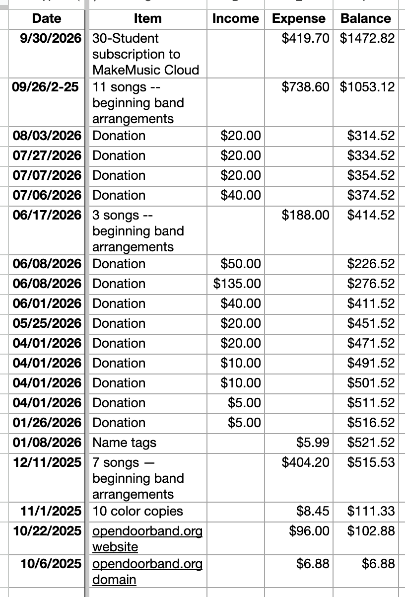

Open Door Band Music & Equipment Fund
Open Door Band has no dues and no required financial contributions.
The band is supported through voluntary contributions from members and audience members who wish to help offset the cost of music, equipment, and other band-related expenses.
What Contributions Support
Contributions may be used for:
Concert band music purchases
Percussion instruments and equipment
Printing and administrative expenses
Other items that directly support Open Door Band activities
All purchases become part of the Open Door Band music library or equipment inventory and remain available for future band use.
Financial Transparency
Open Door Band is committed to maintaining transparent financial records.
The following information is published on this page:
Beginning balance
Contributions received
Expenses paid
Current balance
Description of purchases
Contributor names are not published.
Financial records are available for review by participating members.
How Contributions Are Handled
Open Door Band is a resident-led recreational music group.
Contributions:
Are completely voluntary
Are not required for participation
Do not provide special privileges, voting rights, seating assignments, or part assignments
Are used solely for the benefit of the band
No individual receives compensation from band contributions.
Open Door Band is not a nonprofit corporation and contributions are not tax-deductible charitable donations.
Current Financial Summary
(Financial activity will be posted here as it occurs.)
Contribute
If you would like to help support future music and equipment purchases, contributions may be made via Zelle using the QR code available at rehearsals and showcases.
Thank you for helping keep Open Door Band accessible to musicians of all experience levels.
